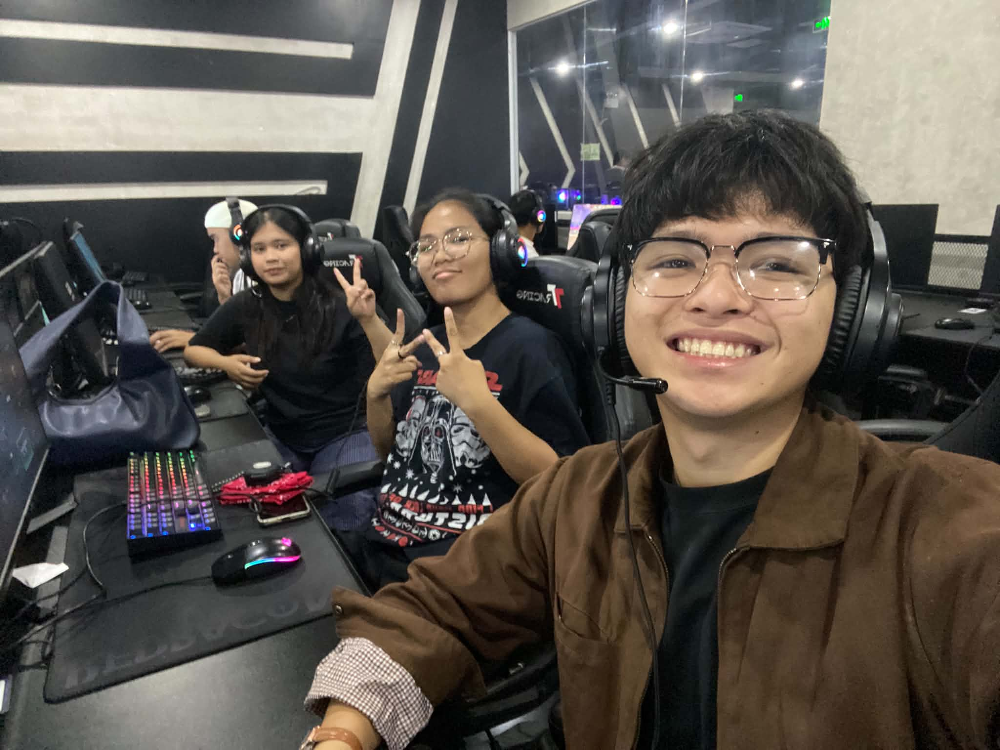
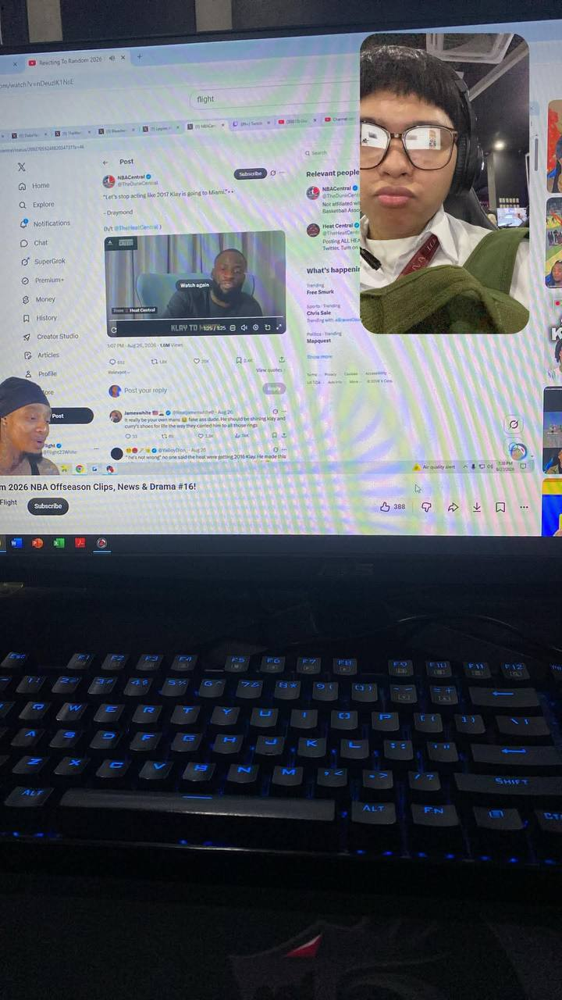
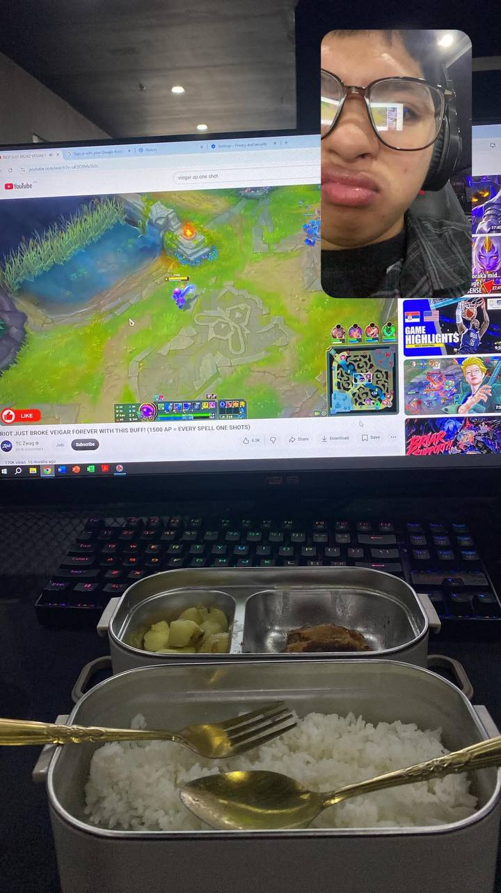
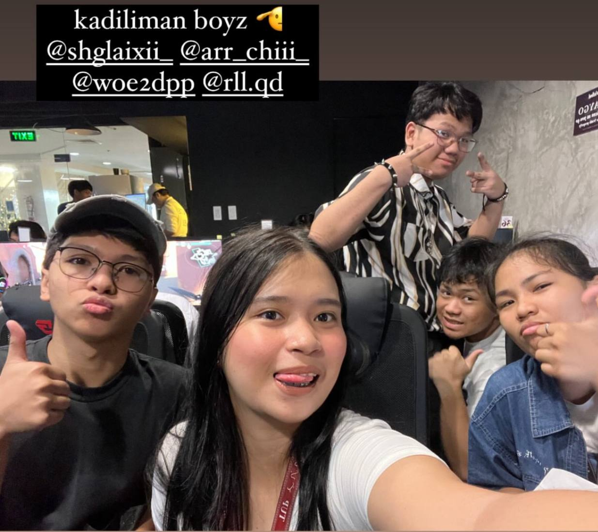

Kadiliman Esports Stadium
659-A, Brgy, Manila Real Residences, 1129 Natividad Lopez St, Ermita, Manila, 1000 Metro Manila

Why I Recommend Kadiliman Esports Stadium
Food, comfort, and connectivity all come together at Kadiliman Esports Stadium. Located at 659-A, Manila Real Residences, along Natividad Lopez Street in Ermita, Manila, this esports cafe offers a place to enjoy food, use computers, and spend time with friends.
I've been visiting this cafe for months and even years across different branches and locations, but this particular location stands out to me. The place is spacious and has plenty of seating areas, making it comfortable for extended visits. It also offers a very good internet connection.
The food has a variety of options, and the computers are powerful enough to handle demanding tasks. The staff are also friendly and accommodating, which adds to the overall experience. Whether you want to play games, use a computer, eat, or simply spend time with friends, Kadiliman Esports Stadium is one of my top recommendations.
Place Details
| Place | Kadiliman Esports Stadium |
|---|---|
| Address | 659-A, Manila Real Residences, 1129 Natividad Lopez St, Ermita, Manila, 1000 Metro Manila |
| Category | Esports Cafe / Gaming |
| Food Options | A variety of food and drinks |
| Computers | Suitable for demanding computer tasks and gaming |
| Internet | Very good internet connection |
| Seating | Spacious with many seating areas |
| Best For | Gaming, computer use, eating, and socializing |
More Photos



Suggest a Place
Know a great spot near TUP? Recommend it to us!